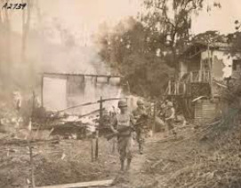
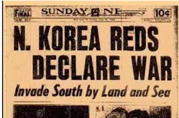

Conflicts
The Korean War, a conflict that unfolded between 1950 and 1953, was deeply rooted in geopolitical tensions and ideological divisions of the Cold War era. The Korean Peninsula, divided at the 38th parallel, became a volatile stage where the forces of communism, led by North Korea's Kim Il-sung and supported by the Soviet Union and China, clashed with the anti-communist stance of South Korea under Syngman Rhee, backed by the United States and its allies.
Politics
The politics surrounding the Korean War were complex and deeply rooted in the geopolitical dynamics of the post-World War II era. Here are some key political aspects of the Korean War.The Korean War's legacy continues to shape politics in the region. The division of North and South Korea remains a significant geopolitical issue, and the Korean Peninsula is often considered one of the last vestiges of the Cold War. The political dynamics surrounding North Korea, including its nuclear ambitions and human rights concerns, are directly tied to the unresolved issues stemming from the Korean War.
Speechless
This new perspective forces us to rethink our collective memory of the Korean War and underscores the importance of preserving and sharing these stories for future generations. In doing so, we honor the sacrifices of those who lived through this difficult chapter of history and ensure that the lessons learned are not lost over time.